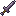
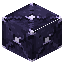
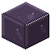
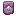
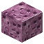
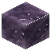
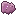
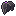
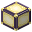

Resonance
Resonance, with all four pieces on: every 4th melee hit on one foe, each within 3 s of the last, rings for +2 damage and Slowness II for 1 s.
Three tiers of tools and armour, two set bonuses, three elytra augments, and the items that open the way. Hover or tap a slot for its name.
| Tier | Durability | Mining speed | Sword damage | Mines like | Armour (helmet/chest/legs/boots) |
|---|---|---|---|---|---|
 Voidstone | 190 | 5.5 | 5.5 | iron | none |
| Resonite | 1,700 | 8.5 | 7 | diamond | 3/8/6/3, toughness 2 |
| Voidsteel | 2,100 | 9 | 8 | netherite | 3/8/6/3, toughness 3 |
| Diamond (vanilla) | 1,561 | 8 | 7 | diamond | 3/8/6/3, toughness 2 |
| Netherite (vanilla) | 2,031 | 9 | 8 | netherite | 3/8/6/3, toughness 3 |
Voidstone is cheap End gear for the first days. Resonite is crafted from ingots, or smithed from diamond gear with the Hollow Sentinel's template. Voidsteel is smithed from Resonite gear with the Void Leviathan's template.
Resonance, with all four pieces on: every 4th melee hit on one foe, each within 3 s of the last, rings for +2 damage and Slowness II for 1 s.
Void-touched, with all four pieces on: fallen into the void, it holds its damage off you for 10 s each fall, and an updraft lifts you half again as fast. An elytra with an augment counts as the set's chestplate.
An augment is smithed onto an elytra and stays on it: the item is still vanilla's elytra, so enchantments and other mods keep working with it. Worn, an augmented elytra shows its augments.
An elytra augment: smithed on with Echo Amber, the elytra wears 40 % slower while gliding.
An elytra augment: smithed on with Echo Amber, while gliding, updrafts lift you 50 % more and currents carry you twice as hard.
Given to each who fought the Void Leviathan.
An elytra augment: smithed on with Echo Amber, press jump while gliding for a rocket's boost, once every 30 seconds.
Given to each who fought the Architect.

→2Catches you if you fall into the void. Once, then it cracks.

The outer End's crystal metal: Resonite Shards from the Resonant Spires bound with Chorus Resin.

The Hollow Sentinel's drop: smiths diamond gear into Resonite.

→2Forged with Voidsteel Scrap and Echo Amber into Voidsteel.
The Void Leviathan's drop: smiths Resonite gear into Voidsteel. Voidsteel is smithing only.

→2Opens the Unfinished Citadel's Amber Gate for ten minutes, and is spent on it.

→
Repairs half an elytra in an anvil. The dragon leaves them in its hoard.
A lantern of Polished Voidstone with Lumen for its flame.

A lamp lit by Lumen, as bright as a block gets.
Slows your fall for ten seconds.